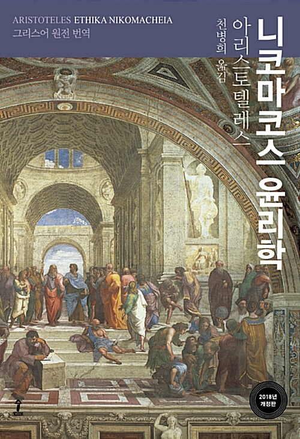

줄거리
책 내용 요약 정리

줄거리
『행복』
1권 7장 ~ 1권 13장에서 행복의 의미, 행복이란, 행복의 획득 방법, 행복과 행운, 불행,
행복한 사람의 사후, 행복과 칭찬, 지적인 덕, 도덕적인 덕으로 구성되며, 이 이야기는 10권
6장 ~ 7장 행복은 덕이 있는 활동이다. 행복과 관조적 삶과도 연결된다.
『도덕적인(윤리적인) 덕』
2권 ~ 3권 5장은 ‘덕’에 대한 이야기로 도덕적인 덕과 습관, 선과 중용의 관계, 덕과 쾌락,
고통, 행동, 품성의 관계, 중용에 도달하기 위한 실천적 지침, 자발성과 비자발성, 도덕적(윤리적) 행위와 선택,
선택과 심사숙고, 외견상의 선, 도덕적(윤리적) 행위와 책임 등을 고찰한다. 3권 6장 ~ 4권 전부는 ‘중용’에 따른
구체적인 ‘도덕적(윤리적)인 덕’, 즉 ‘중용의 덕’으로 ‘용기, 무모함, 겁이 많음’, ‘절제와 무절제’, ‘관후함’,
‘호탕함, 쩨쩨함, 과시(사치)’, ‘긍지’, ‘온화함’, ‘친애(우애)’, ‘진실’, ‘재치’, ‘수치’ 등을 소개하고 있다.
『정의』
5권은 ‘중용’에 따른 구체적인 ‘도덕적(윤리적)인 덕’의 하나인 ‘정의’를 따로 떼어 설명한 부분이다.
넓은 의미의 정의, 부분으로서의 정의, 분배적 정의, 시정의 정의, 교환 정의, 정치적 정의, 자연적 정의와
법적 정의, 정의와 자발성, 불의(부정의)와 자발성, 근원적 공정성, 자발적 부정의의 문제 등을 다루고 있다.
 작가아리스토텔레스
작가아리스토텔레스 줄거리내용 요약
줄거리내용 요약 윤리 문제다양한 윤리적 문제들
윤리 문제다양한 윤리적 문제들